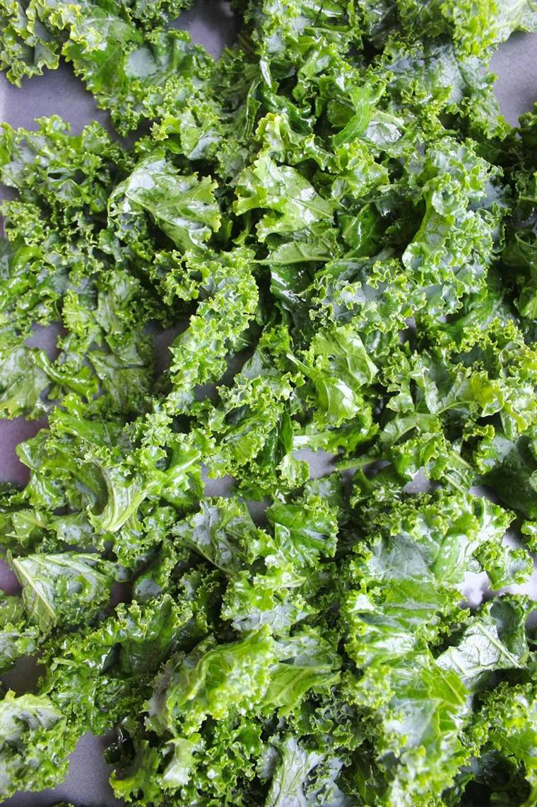

Kale
Quick answer
Kale is one of the most nutrient-dense leafy greens, providing kaempferol and quercetin (flavonoids with anti-inflammatory properties), glucosinolates, and exceptionally high levels of vitamins K, C, and A per calorie.
What it is
Kale (Brassica oleracea var. sabellica) is a cruciferous leafy green related to broccoli, cabbage, and Brussels sprouts. Common varieties include curly kale, lacinato (dinosaur/Tuscan) kale, and red Russian kale. It is available fresh, frozen, and as dried kale chips.
Kale has been cultivated in Europe since the Middle Ages and was one of the most common green vegetables until the modern era. It experienced a major resurgence in popularity in the 2010s. It is used in salads, smoothies, soups, stir-fries, and as baked chips.
Why kale may support an anti-inflammatory diet
Kale contains kaempferol and quercetin, two flavonoids that have been studied for their ability to inhibit NF-kB signaling and reduce the production of pro-inflammatory cytokines like TNF-alpha and IL-6. These compounds are present in meaningful amounts in raw and lightly cooked kale.
As a cruciferous vegetable, kale also contains glucosinolates that are converted to isothiocyanates when the plant cells are broken by chopping or chewing. These compounds activate the Nrf2 antioxidant defense pathway, similar to sulforaphane in broccoli.
Key nutrients and compounds
A 100g serving of raw kale provides approximately 4.3g protein, 120mg vitamin C (133% DV), 254mcg vitamin K (212% DV), 500mcg beta-carotene (converted to vitamin A), 150mg calcium, and 1.5mg iron. It contains only 49 calories per 100g, making it one of the most nutrient-dense foods by calorie.
Potential health benefits
- Exceptionally high vitamin K content supports bone health and blood clotting
- Contains kaempferol and quercetin with studied anti-inflammatory effects
- Provides more vitamin C per calorie than most fruits
- Glucosinolates activate cellular antioxidant defense pathways
- High calcium content for a plant food, useful for dairy-free diets
How to eat kale
- Massage raw kale with olive oil and lemon juice for tender salads
- Blend into green smoothies with banana, berries, and nut milk
- Bake kale chips with olive oil and sea salt at 150C for 15 minutes
- Saute with garlic and olive oil as a quick side dish
- Add chopped kale to soups and stews in the last 10 minutes of cooking
- Use lacinato kale in Italian ribollita or white bean soup
Shopping and storage
Choose kale with firm, deeply colored leaves and no yellowing. Store unwashed in a plastic bag in the refrigerator for up to 5-7 days. Frozen kale is pre-washed and convenient for smoothies and cooked dishes.
FAQ
Is raw or cooked kale healthier?
Both have advantages. Raw kale retains more vitamin C, while cooking reduces oxalates and makes some nutrients more bioavailable. Lightly steaming or sauteing is a good compromise.
Can kale affect thyroid function?
Raw cruciferous vegetables contain goitrogens that may interfere with thyroid function in very large amounts. Cooking significantly reduces goitrogen content. Normal dietary amounts are safe for most people with healthy thyroid function.
How do I reduce the bitterness of kale?
Massaging raw kale with olive oil and acid (lemon juice or vinegar) breaks down cell walls and reduces bitterness. Lacinato kale is naturally less bitter than curly varieties.
Is kale better than spinach?
They have different nutrient profiles. Kale is higher in vitamins K and C, while spinach is higher in folate and iron. Both are excellent leafy greens and can be used interchangeably in many recipes.
Evidence note
Research on cruciferous vegetables and inflammation is supported by epidemiological data showing associations between higher cruciferous intake and lower inflammatory markers. Kaempferol and quercetin have been studied in cell and animal models, with human data primarily from dietary pattern studies.
This page describes kale as a supportive food within a broader anti-inflammatory eating pattern, not as a standalone medical treatment.